Figures from the formalization
123 pictures drawn by Lean from its own values: the boundary circle and its strands, the crossing graph, the necklaces, the matrices from the exponents to the incidence matrix, the winding-one cycles, and the potential, its gradient and its inverse on the running example. Each is grouped with the part of the paper it illustrates and links to the items of the reading edition that use it.
1 The vocabulary of a cell
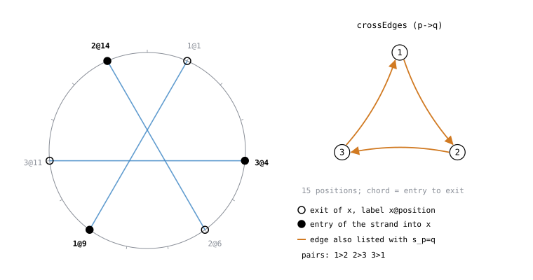
crossEdges line; all numbers are values Lean printed for the frozen definitions.In the reading edition: INT1 S05 S06 S10 S11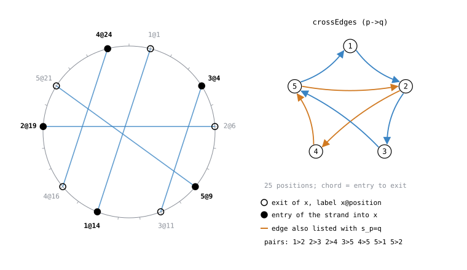
crossEdges line; all numbers are values Lean printed for the frozen definitions.In the reading edition: INT1 S05 S06 S10 S11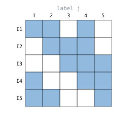
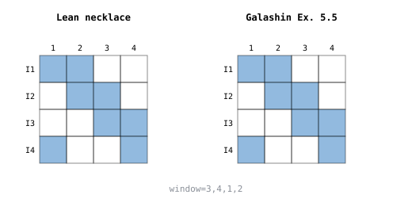
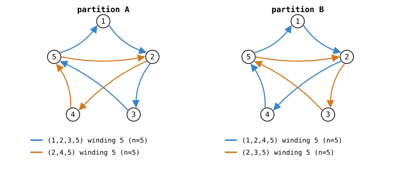
crossEdges line.In the reading edition: S37 S38 S39 INT1 EX03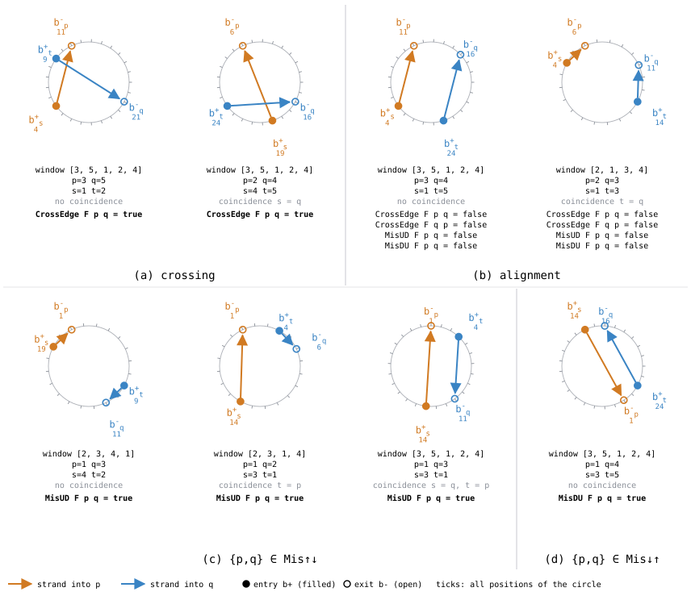
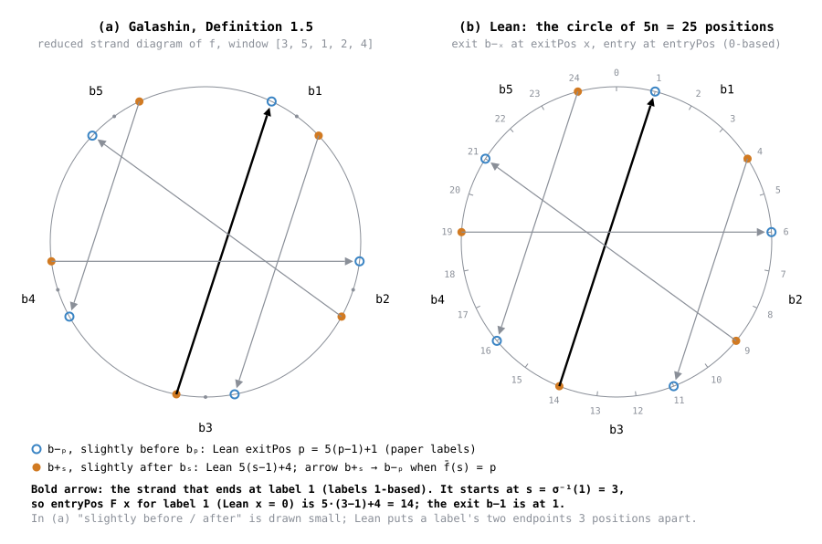
entryPos and exitPos, not copied; his Figure 2(b) (p. 4) draws another instance.In the reading edition: S05 S06 INT1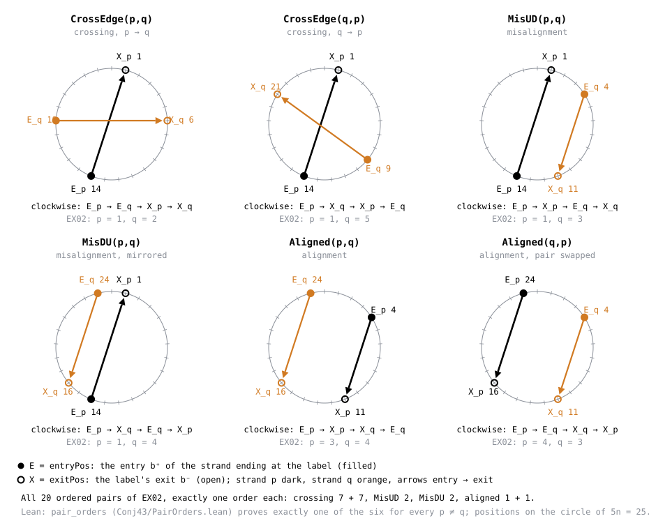
pair_orders), and that 'none of the four' is exactly the aligned orders (none_of_four_iff_aligned); alignment_iff_affine identifies that with Galashin's alignment.In the reading edition: INT1 S08 S09 S10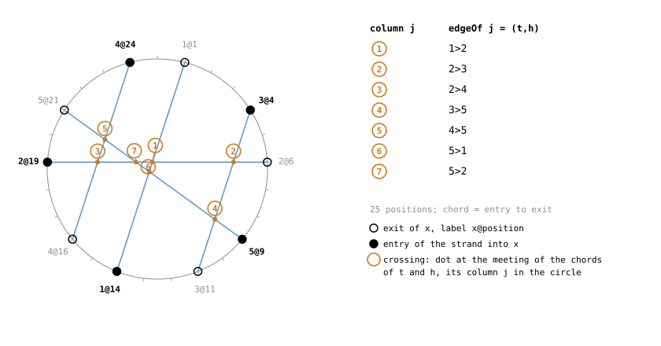
edgeOf j in Lean's order, which is the column order of $B$ and $M$; all numbers are values Lean printed.In the reading edition: S17 S18 INT1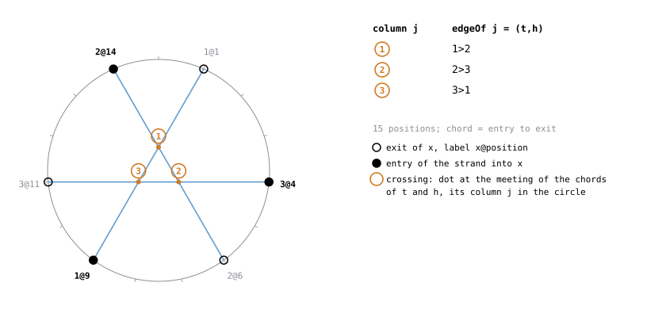
edgeOf j in Lean's order, which is the column order of $B$ and $M$; all numbers are values Lean printed.In the reading edition: S17 S18 INT1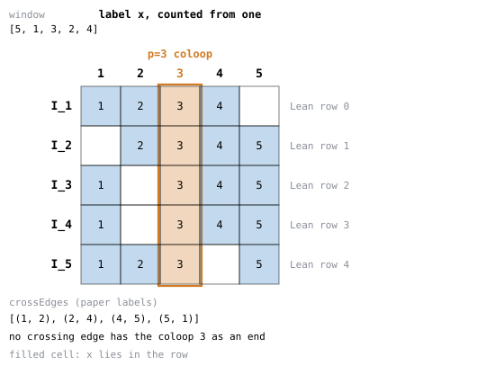
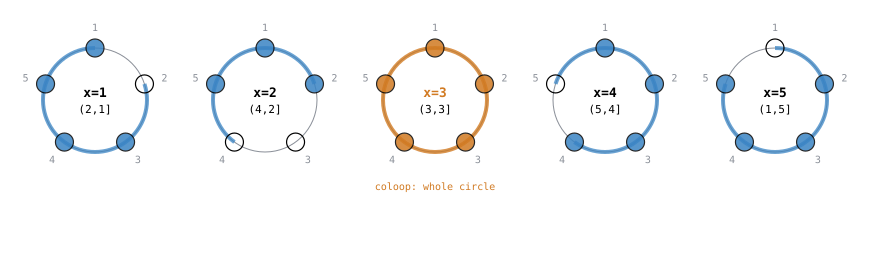
mem_necklace_iff; for the coloop $s_x = x$ and the inArcC convention makes the arc the whole circle; the filled rows are the values Lean printed.In the reading edition: S29 S15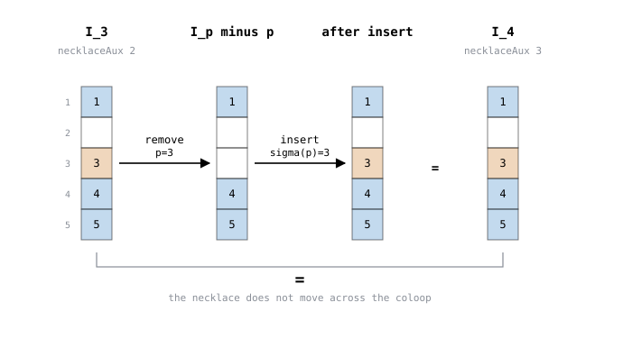
necklaceAux_coloop_step); every set is the value Lean printed.In the reading edition: S29 S15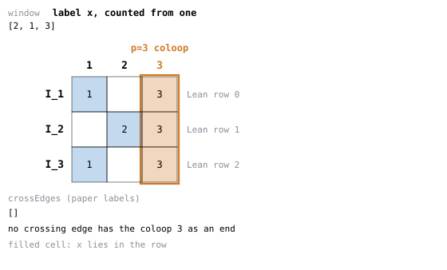
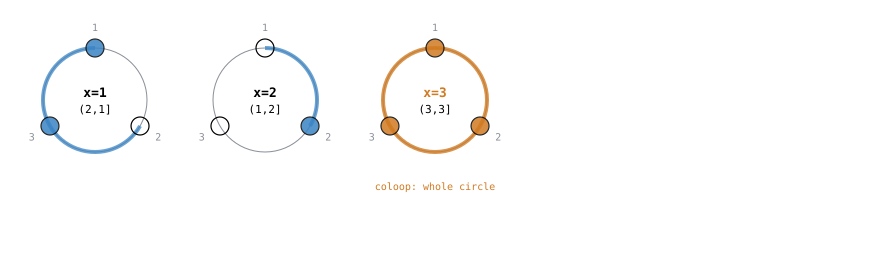
mem_necklace_iff; for the coloop $s_x = x$ and the inArcC convention makes the arc the whole circle; the filled rows are the values Lean printed.In the reading edition: S29 S152 The matrices and the row-difference identity
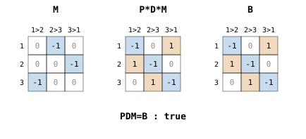
crossEdges line and the printed test PDM=B, as Lean evaluates them (blue $-1$, orange $+1$).In the reading edition: INT3 S19 S20 S21 S22 S23 S24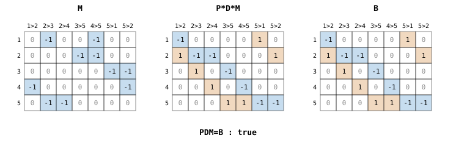
crossEdges line and the printed test PDM=B, as Lean evaluates them (blue $-1$, orange $+1$).In the reading edition: INT3 S19 S20 S21 S22 S23 S24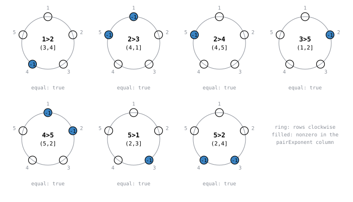
pairExponent column of $M_N$ is $-1$ (filled), with the arc $(s_p, s_q]$ in the centre taken from the printed $s_x$; the printed 'equal' test compares the column with the paper's rule.In the reading edition: INT4 S19 S20 S24 EX06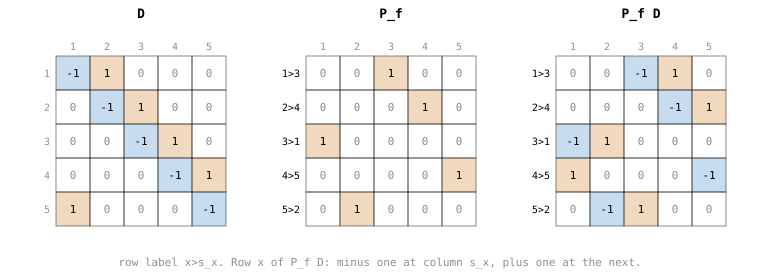
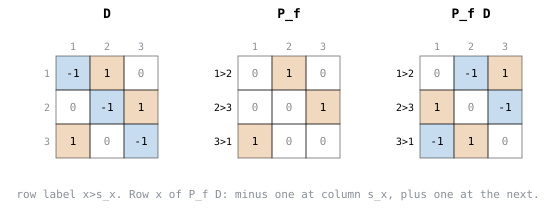
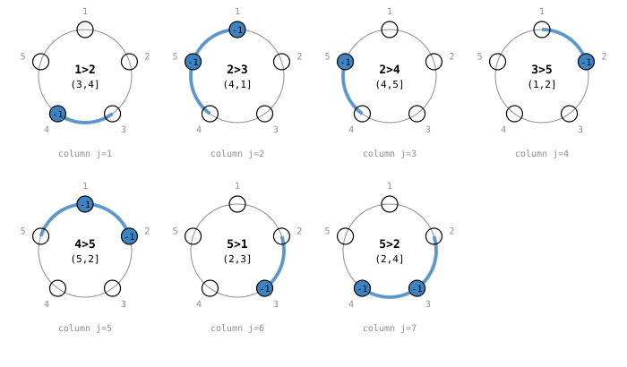
Mmat_closed.In the reading edition: S19 S20 INT3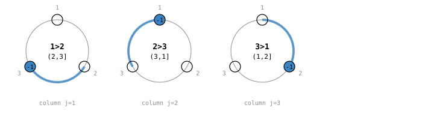
Mmat_closed.In the reading edition: S19 S20 INT3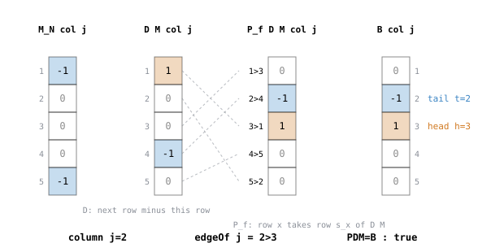
PDM=B holds; values are as Lean evaluates them.In the reading edition: S24 S19 S22 S23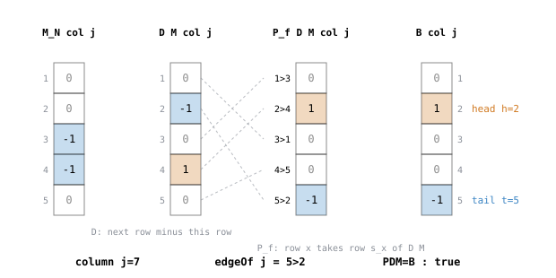
PDM=B holds; values are as Lean evaluates them.In the reading edition: S24 S19 S22 S23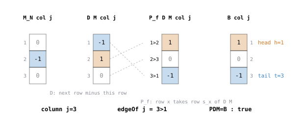
PDM=B holds; values are as Lean evaluates them.In the reading edition: S24 S19 S22 S233 Cycles, the cotangent inequality, the Hessian and the hinge
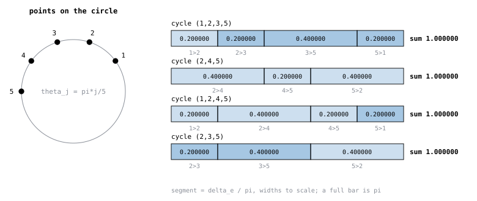
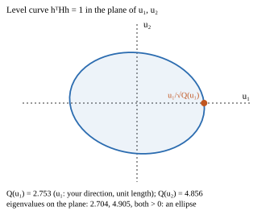
hessian_gauge_positive).In the reading edition: S53 S42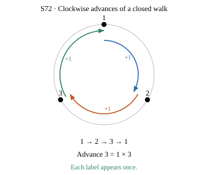
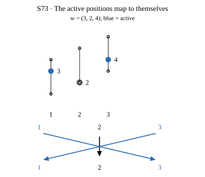
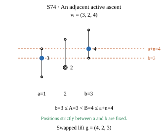
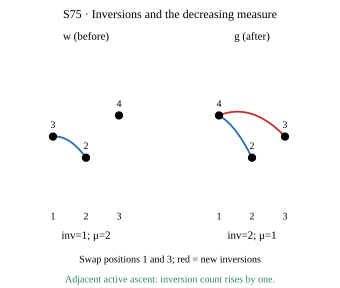
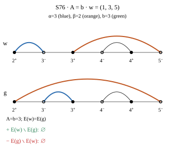
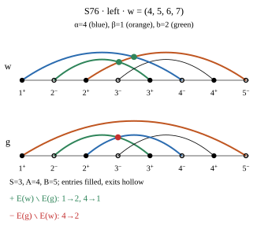
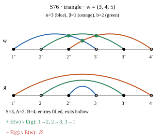
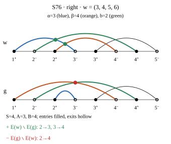
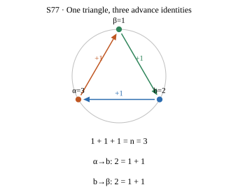
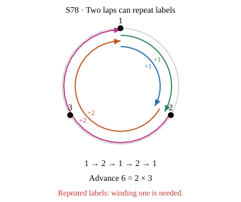
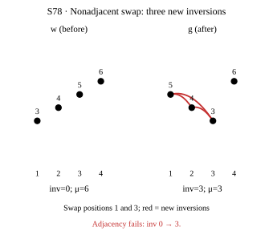
4 The potential and its derivatives
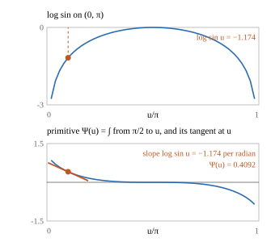
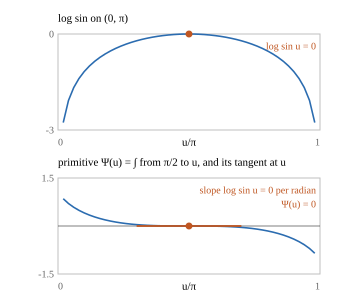
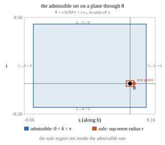
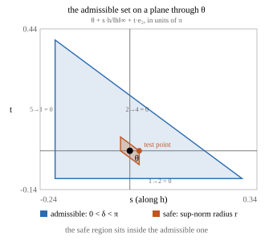
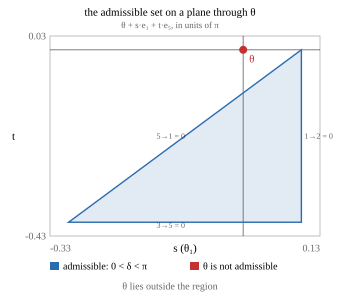
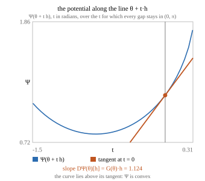
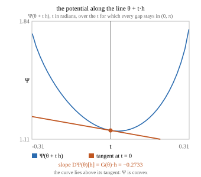
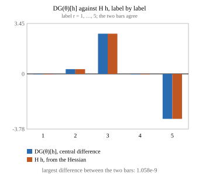
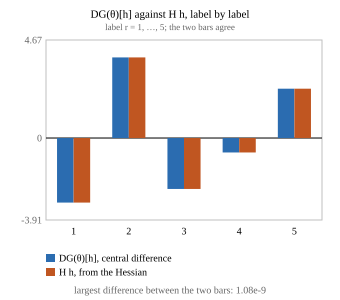
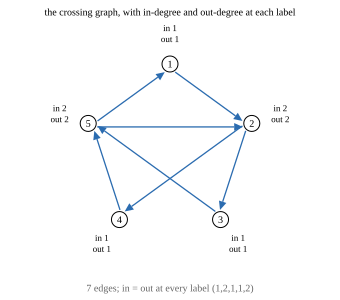
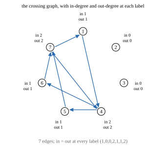
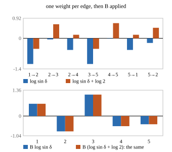
5 Convexity, injectivity, embedding and the variational inverse on the slice
potential_slice_strictConvex).In the reading edition: S54gradient_slice_strictMonotone).In the reading edition: S55gradient_slice_injective).In the reading edition: S56gradient_slice_embedding).In the reading edition: S57gradient_incidence_openEmbedding).In the reading edition: S58potential_variational_inverse).In the reading edition: S59variational_image_minimizer).In the reading edition: S60measurement_conditional_homeomorphism); the model is not the Grassmannian measurement.In the reading edition: S61 S66Float level sets of $F_y$ on the plane $x+\pi(se_3+te_2)$ surround $x$, with twelve projected damped Newton steps and no convergence claim.In the reading edition: S716 The necklace logarithms and the conditional theorem
pairExponent gives it: the seven crossing pairs (orange) carry all the nonzero entries, the pairs 13, 14, 34 are zero in every row, and the two row sums of exponent times $\ell_{pq}=\log\lvert 2\sin(\theta_q-\theta_p)\rvert$ agree.In the reading edition: S62necklace_recovery_constant states.In the reading edition: S63necklace_log_gradient.In the reading edition: S65gal512_measurement_homeomorphism on the synthetic necklace-log model, with the hypotheses hMeas, honto, hN and hlog on its arrows and the instance's values in its boxes; the last box recovers $\theta$.In the reading edition: S66gal512_gradient on the synthetic model: hlog says $N(\mathrm{Meas}\,\theta)$ is the full pair sum plus a constant $c=0$ (top), and from it $R(N(\mathrm{Meas}\,\theta))=G(\theta)$ follows (bottom).In the reading edition: S67gal512_recovery_incidence: the weight $w_e=\log\sin\delta_e$ on each crossing edge and, at each label, the weights in minus the weights out, which is the recovered vector $PDN(\theta)$ and so lies in the range of $B$.In the reading edition: S68gauge_slice_nonempty for $a=0$: a regular pentagon on the circle of angles $2\theta$, with every crossing gap $\delta_e/\pi$ strictly between 0 and 1.In the reading edition: S69gal512_hypotheses_nonvacuous: $\mathrm{Meas}\,\theta$, $N(\mathrm{Meas}\,\theta)$ and the full pair sum agree label by label, and the dot lies on the curve of $\mathrm{Meas}$ over the segment $\theta+te_3$ inside the chamber.In the reading edition: S70Float chain from $\theta$ through the exponential necklace model, its positive coordinates and $-P_fD\log\Delta$ returns to $\theta$ numerically; this synthetic model is not Galashin's objects.In the reading edition: S79Float bars of $\Delta$ and $2\Delta$ give equal recovered vectors and the same numerical inverse point.In the reading edition: S80hlog is omitted.In the reading edition: S81Float coordinates in the satisfiable exponential necklace model, which is not Galashin's objects.In the reading edition: S81Float angles restrict at each least-label anchor and all six crossing gaps remain unchanged.In the reading edition: S84hsq remain hypotheses and no critical cell or measurement map is constructed.In the reading edition: S86